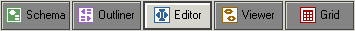
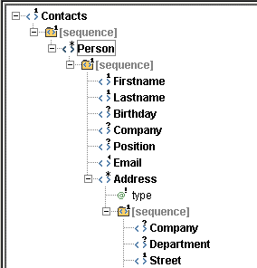
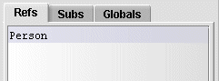
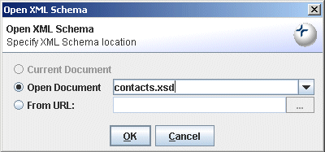
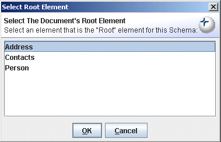
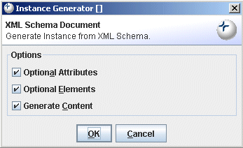

). Note: Expand All Nodes does not always
expand the tree completely in the Schema Viewer, because of the possibility of endless recursion.
). Note: Expand All Nodes does not always
expand the tree completely in the Schema Viewer, because of the possibility of endless recursion.
Exchanger XML Editor has significant built-in support for XML Schemas, DTDs, RelaxNG and the Namespace Routing Language. There are three separate ways of using grammars in the Exchanger XML Editor:
Instance Validation
Tag Completion
Schema Viewer and Outliner
Tag Completion and Instance Validation have already been covered in the earlier section on Editing XML Content. One special case worth mentioning is the use of one grammar for validation and a separate one for tag completion (or tag prompting). An occasion to do this may be when the grammar has a very large tag vocabulary and the user typically only needs a very small subset. In this case, it is convenient to use a reduced grammar for tag completion, while still validating against the full grammar. See the section on "Infer XML Schema" below for more information on creating reduced grammars based on sample input data. To set up a grammar for use in Tag Completion, select XML->Set Properties... and in the Tag Completion section of the dialog, choose the grammar type and set the appropriate location.
The schema viewer is a convenient tool for browsing an XML Schema in a tree view and seeing the details for element and attribute definitions. Note that the schema viewer currently only works with XML Schemas but it is possible to convert DTDs and RelaxNG grammars for use in the schema viewer with the functionality available through Schema->Convert Schema as described later in this section.
Open the file schema/contacts.xsd in the Schema Viewer project. The Schema Viewer displays a tree representation of the top level of the schema. Click on the Editor button (or select View->Editor or press Ctrl-3) to see the corresponding tag-based version of the file.
Alternatively it is possible to view the tree representation of the schema when editing an instance document. Ensure that validation is turned off when opening files by selecting File->Preferences and on the Views tab, ensure that Validate Document on Opening is turned off.
Open the file contacts.xml in the Schema Viewer project.
Select XML->Set Properties and in the Outliner/Schema Viewer section of the dialog, set the file location to projects/Schema Viewer/schema/contacts.xsd. The Schema and Outliner buttons now become active.
Figure 1. View Buttons
Click on the Schema button. The Schema Viewer displays a tree representation of the top level of the schema.

Figure 2. Schema Viewer top level tree
Double-click on the Person node to expand the node. Click on the Expand All Nodes button (). Note: Expand All Nodes does not always
expand the tree completely in the Schema Viewer, because of the possibility of endless recursion.
The Schema Viewer displays a tree representation of the complete schema.
Figure 3. Schema Viewer expanded tree
Click on the Birthday node in the tree view and the corresponding details are displayed in 2 windows to the right.
The upper window contains details of the Birthday element definition.

Figure 4. Schema Viewer element details
To see details about the particular schema that includes the current element, click on the link in the schema field in the Details panel. (This is useful where there are imported/included schemas).
The lower window on the right shows References (elements where Birthday is used), Substitutions (elements that can be used in place of Birthday) and Globals (top-level element definitions).
Figure 5. Schema Viewer element references, substitutions and globals
Choose the Globals tab, click on Address and press Show. The tree view will now have Address as its root element, and the Details panel will change to show the details for the Address element. Using the References, Substitutions and Globals tabs provide an easy way to navigate through a schema definition.
Any associated grammars can be easily viewed or edited by double-clicking on the appropriate filename in the Document Properties window. This causes a new window to be opened in the Editor for the chosen grammar.
An XML Schema, DTD or RelaxNG grammar can be validated by opening the grammar in the editor using File->Open (or alternatively double-clicking on the appropriate filename in the Document Properties window as explained above) and then choosing Schema->Validate XML Schema or Schema->Validate Relax NG or Schema->Validate DTD depending on the type of grammar.
Given a sample XML file, it is possible to "learn" or infer an XML Schema to which the file adheres. Open the file contacts.xml in the Schema Viewer project in the editor, and select Schema->Infer XML Schema. When prompted for a location in which to save the inferred schema, enter projects/Schema Viewer/schema/inferred.xsd and press Save. Use the schema viewer to compare the original contacts.xsd with the inferred version - you will notice that there is less detail in the latter, particularly with regards choices and lower and upper bounds. However, using Schema->Infer XML Schema can be helpful when creating a schema from scratch, given sample data.
One place where the Infer XML Schema functionality can be very useful is when dealing with a complex schema/DTD like Docbook where there are a lot of elements/attributes but you typically only use a small subset of those available. Open one of your sample (say, Docbook) documents and then use Infer XML Schema to create a temporary schema that can then be used for tag prompting (in the Tag Completion section of the XML->Set Properties... dialog). This will restrict the prompting to the subset of tags that you regularly use while facilitating the use of the full schema/DTD for validation purposes. This technique is also very helpful in the Outliner tool for simplifying data entry.
While it is possible to use Exchanger to edit and validate XML files that use DTD or RelaxNG, it is necessary to have a valid XML Schema to take full advantage of some functionality such as easy content generation using the Outliner or schema browsing in the Schema Viewer. To convert an existing DTD or RelaxNG file to XML Schema, access the Schema Converter by selecting Tools->Convert Schema. Set the Input Grammar Type to DTD, for example, and the Input URL to projects/Schema Viewer/dtd/contacts.dtd. Set the Output Grammar Type to XSD (XML Schema) and Output URL to projects/Schema Viewer/schema/converted.xsd and press Convert.
Convert Schema can be used to convert in any direction between DTDs, XML Schemas and RelaxNG grammars (both regular and compact systax). It also provides equivalent functionality to Schema->Infer XML Schema when the input is an ordinary XML document.
It is possible to create an example document that conforms to an XML Schema using the Schema->Schema Instance Generation function. First open the schema schema/contacts.xsd from the Schema Viewer project in the editor. Now, select Schema->Schema Instance Generation and set a target schema in the displayed dialog.
Figure 6. Schema Instance Generation
Because you have the schema already open in the editor, you can select it using Current Document or the Open Document drop-down in the dialog. Alternatively, you could choose any other schema using the From URL option.
If the root element of the schema cannot be detected automatically, a list of potential root elements will be displayed.
Figure 7. Schema Instance Generation Root Element
Select Contacts from the list of global elements and press OK.
Figure 8. Schema Instance Generation Options
When generating a sample instance, a number of options are available for configuring the output. Required elements and required attributes will always be generated but optional element, optional attributes and sample data can also be created. In this case , choose Optional Attributes, Optional Elements and Generate Content.
The generated instance will be opened in a new window. Press the Format button in the editor toolbar or choose Edit->XML->Format to tidy up the output.

Figure 9. Schema Instance Generation Output
When generating the sample instance, Exchanger XML will attempt to insert a valid schema location in the output document. To validate the instance against this schema, ensure that the document properties are set that to validate using the location in stored in the document. To check, select XML->Set Properties... and tick Location defined in Document in the validation section. Now press the Validate button on the main toolbar or press the shortcut F7 to check that the output conforms to the target schema.
It is not always possible to automatically generate a vaild sample from a schema, particularly when there are recursive structures and regular expressions, so some manual intervention may be needed on the output before it will validate againat the target schema.
As an example, generate an instance for the schema/UBL_Library_0p70_Order.xsd schema in the UBL XSLFO project. Set the root element to Order and initially set the options to only Generate Content. The output document should validate, but it is really just a skeleton and not very useful.
To create a more realistic sample, repeat the process but this time choose to generate Optional Elements as well. The output is a lot richer but it also fails to validate. This is because of the occurrence of the recursive structures that are generated.
To fix up the output, it is necessary to remove some of the recursive elements. Firstly format the output to make it easier to handle. Press Validate and and a number of errors are reported. Comment out the cat:DeliverySchedule from line 1035 to 1043, the cat:OrderLine on line 1044, the cat:TransportEquipmentMeasurement from line 1277 to 1284 and the second occurrences of cat:DeliverySchedule and cat:OrderLine on lines 1789 to 1798. The generated file should now validate against the original schema.
It is possible to create an XML Schema or a RelaxNG grammar using the appropriate built-in types and to use the normal tag completion functionality to simplify the editing process. For DTDs, it is necessary to provide specific support as the underlying synax is not XML. To create a new DTD, simply choose File->New and select DTD Document. Now when you enter a less-than character, you are prompted with the appropiate keywords for a DTD. Syntax highlighting is also available for DTDs and can be specified in the Text tab of File->Preferences.
XML Catalogs provide a means to map the information in an XML external (PUBLIC or SYSTEM) identifier into a URI reference for the desired resource. This is convenient where the resource corresponding to an external identifier may not be available due to network issues or where the use of a local resource may be preferred (for performance reasons, maybe). It is possible to set up one or more catalog files in the System tab of File->Preferences to facilitate the locating of appropriate DTD/Entity files for PUBLIC and SYSTEM identifiers in an XML instance.